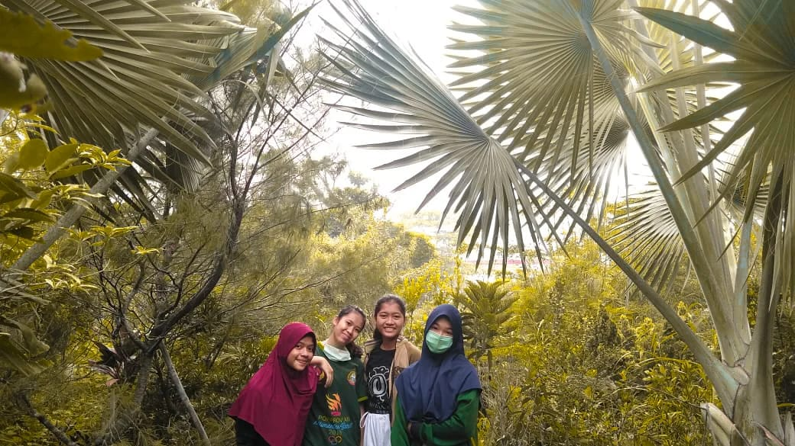

IFT104
Faiza Imania Putri
Hello everyone! My name is Faiza Imania Putri, my friends usually call me Faiza. I am from Indonesia specifically in Pontianak, West Kalimantan. For 18 years I live, I have never moved to another place. That’s why sometimes I feel bored with the environment and the atmosphere here. But in my 19 I be required to go out of my hometown to continue my education, then I realize how meaningful this place was for me. It feels so hard to leave my hometown, the memories, the people, the place that I usually visited. Too many memories that this place gives to me. So with this post. I want to introduce several destinations in my hometown and a bit about myself.
My Favorite Things
Martial Art
I joined martial art
(Shorinji Kempo) since
I was 8 years old.
Shorinji Kempo is an
old martial art from
Japan.
Traveling
I love to go traveling
with my friends and my
family. But recently it
is hard to find the right
time since we have our
own activities.
Hiking

I love to go hiking with
my friends. It helps me
relieve my stress. Even
though it makes you feel tired
because you have to climb
it, but it is worth it!
My Hometown
Blue Lake
It's called Blue Lake because
the watercolor is blue. This
lake used to be a query. But
it has not been used for a
a long time. Then it changes
into this beautiful place.
Cuci Kain Waterfall
The name of this waterfall was
created based on the folklore in
Sekadau Province. The beauty is
so mesmerizing and natural.
There is much variety of flora
growing around the waterfall.
Tanjung Batu Beach
This place is often visited by
the tourists because it is
located near the roadway. There
is also a hill and many big
stones spread in the sand that
you can only see it at a low tide.